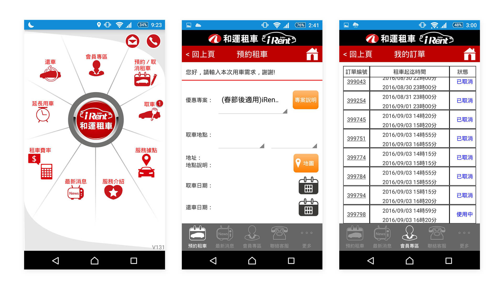
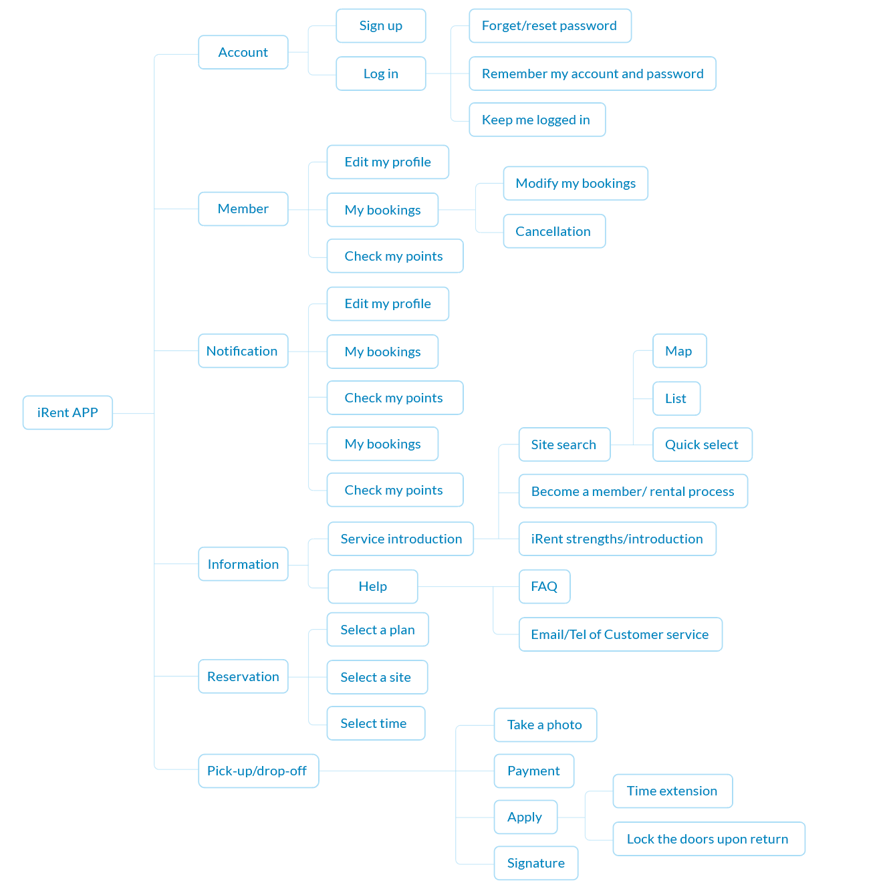
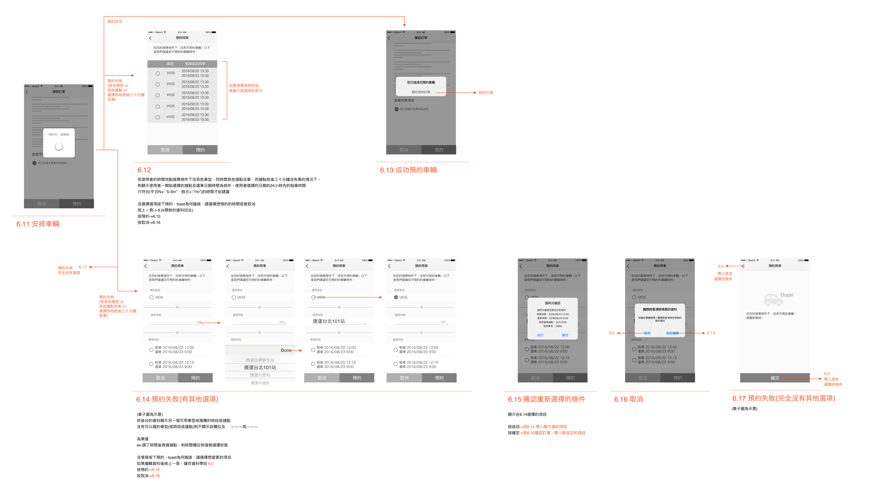
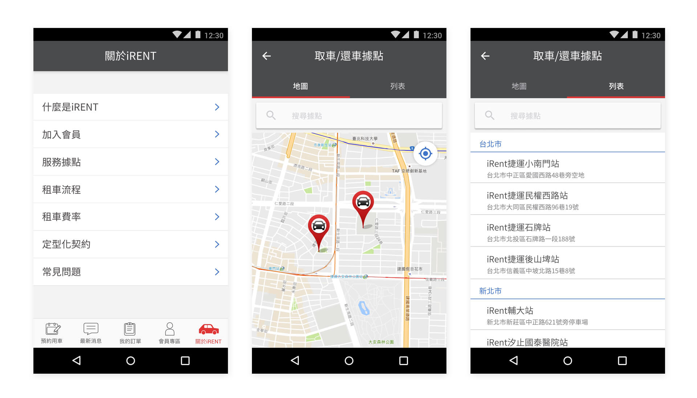
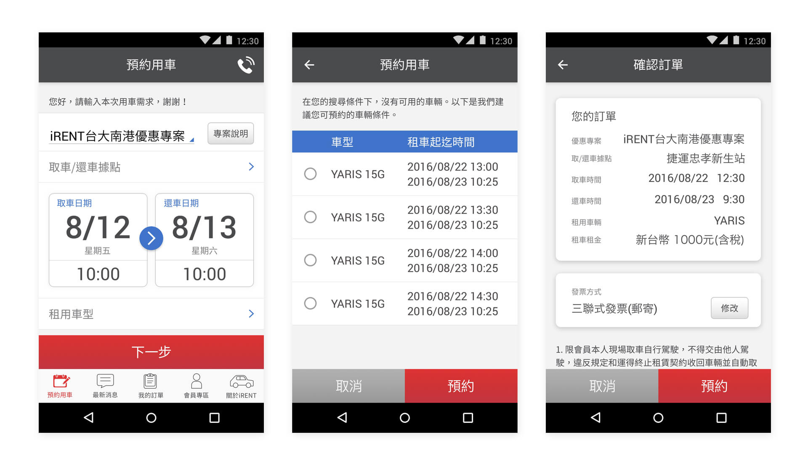
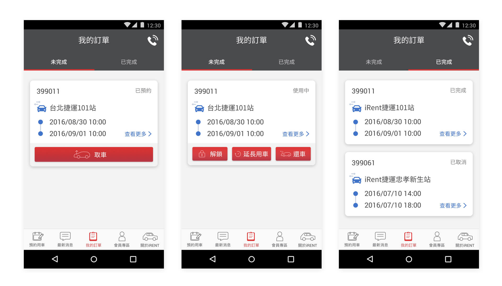

iRent is an app that is used to book a rental car anywhere and anytime.
My task was to revision the app, including improve the current workflows, define the visual style based on the brand concept, and deliver the final design spec.
The biggest challenge was to take a balance on technical limitations, business concerns, and users’ needs. I think that a good designer doesn't only think about users, it’s a role to balance all feedback and find the appropriate solution.
As this revision published, it has brought about the trend of car rental, and ushered in the highest car rental rate in the history of Chinese New Year. The revenue quadrupled, and the reviews on Apple Store were getting better from 2.5 to 4.
Before revision, the APP has many place which is anti-user-behavior. For example:
At the home page, there are up to nine disarranged buttons making users inaccessible to the features they need.
“Ongoing bookings” and “Completed bookings” sections were not differentiat- ed, making a lengthy page.
It wastes time to extend the car renting time
Wish to reorder the booking list from latest to old
Wish to add "Day" on renting car page
It's hard to find a cat to rent
The app is not stable
Allow editing the credit card
Reorganize the IA to reduce users' confusion
Optimize the working flows to help users take action efficiently
Redesign the visual style and define the style guide to keep the consistency
Because the IA was messy I used card sorting to reorganize the IA and came up with the functional map
There is a common user complaint: the difficulty in renting a car. My first idea is allow users to select the pick-up location through map or list:
This process flow is assumed to save users’ effort in finding out the best site and time for car rental. I used Wireframe for discussion with the developer and the proprietor. The proprietor was concerned about the fundamental changes of the new version; he hoped for a fine-tuned version for the sake of churn rate. From the developer’s perspective, the system would be overloaded because of its way of data loading: to load data from the server each time an option is made; the developer didn’t suggest this method.
In order to tackle users’ biggest pain point of the inability to rent a car, we came up with another way: to design a recommendation mechanism aiming to reduce users’ time of repetitive trials. Users to select location/time → System to show whether there is car available; if there isn’t, suggest: 1) the nearby car rental site with the same selected time, and 2) different time with the same car rental site. That way, users can still be provided with a secondary option even if there are no cars for rent under users’ settings of location and time.
The final version wireframe for renting a car:
In addition to assisting users to complete tasks, an interface, in my view, also plays the role of creating a pleasant time for people’s interactions with products, as well as expressing the value and concept of a brand.
The original App leveraged colors of black, orange, B&W and gray, and the red color used in iRent logo. I removed the color orange for the purpose of stressing Chailease’s( 中租租車) signature red color, and changed the color black into dark gray in order to create an accessible tone. Moreover, I defined and integrated the components to enhance the systematic unity of the product as well as users’ capacity; illustrations were also applied to liven up the images and to pull closer to users.
Display the highlight
Related iRent service information like “Location,” “Introduction,” and “Rating” are rearranged and combined under “About iRent” section.
Pick-up locations are represented in two ways: map view and list view.
Remove the logo underneath the status bar to increase the usable space.
Redesign the layout to create a more lucid interface.
The center one is the “Recommendation Booking Time” page (shown in the case when there is no available car for booking.)
Separate the ongoing and completed bookings.
Buttons displayed on the page vary when the present status changes and accordingly creates different tasks for the users.
Functions of pickup, time extension, and return will be triggered only when orders have been placed or when rental cars are in use.
